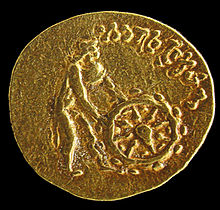

Cloth decorations

Bracelets.

Decorative stars. Tomb I
Aphrodite and Eros. Tomb II,
Tillia tepe.
Tillya tepe, Tillia tepe or Tillā tapa (Persian: طلا تپه) or (literally "Golden Hill" or "Golden Mound") is an archaeological site in the northern Afghanistan province of Jowzjan near Sheberghan, excavated in 1978 by a Soviet-Afghan team led by the Greek-Russian archaeologist Viktor Sarianidi, a year before the Soviet invasion of Afghanistan. The hoard is often known as the Bactrian gold. The hoard is a collection of about 20,600 ornaments, coins and other kinds of artifacts, made of gold, silver, ivory etc, that were found in six burial mounds (five women and one man) with extremely rich jewelry, dated to around the 1st century BCE. The ornaments include necklaces set with semi-precious stones, belts, medallions and a crown. After its discovery, the hoard went missing during the wars in Afghanistan, until it was "rediscovered" and first brought to public attention again in 2003. A new museum in Kabul is being planned where the Bactrian gold will eventually be kept. The heavily fortified town of Yemshi-tepe, just five kilometres to the northeast of modern Sheberghan on the road to Akcha, is only half a kilometre from the now-famous necropolis of Tillia-tepe.
Several coins dated up to the early 1st century CE, with none dated later, suggest a 1st-century CE date for the burial. The burial could correspond to Scythian or Parthian tribes dwelling in the area, or may correspond to the extinction of the local Yuezhi royal dynasty after the conquests of all the other xihou or 'princes'
in Daxia by Kujula Kadphises. (See Pre-Islamic period of Afghanistan.)A silver coin was found in one
of the tombs from the reigns of the Parthianc king Mithridates II, who ruled c. 123–88 BCE. The coin was
found in tomb III, and was apparently held in the hand of the defunct woman.An imitation gold coin of
Parthian King Gotarzes I (95-90 BCE) was found in the left hand of the defunct woman in tomb 6. The fact
that this coin is in gold, and not silver or bronze as is usually the case for Parthian coinage, suggest
that this imitation was made for prestige purposes.
The coin is counterstamped with the frontal depiction of what might have been a local chieftain. The counterstamp was added so as to not damage the portrait of the Parthian king, perhaps indicating some degree of dependency on the Parthians. A gold coin was also found in tomb III showing the bust in profile of the wreath-crowned Roman Emperor Tiberius. On the reverse is an enthroned, sumptuously draped female figure holding a spray and scepter. Coins of this type were minted in the city of Lugdunum in Gaul, between 16 and 21 CE.[1] A Buddhist gold coin from India was also found in tomb IV (the male warrior). On the reverse, it depicts a lion
Finally, a very worn coin has been identified as belonging to the Yuezhi chieftain Heraios.cFinally, a very worn coin has been identified as belonging to the Yuezhi chieftain Heraios. Finally, a very worn coin has been identified as belonging to the Yuezhi chieftain Heraios. with a nandipada, with the Kharoshthi legend "Sih[o] vigatabhay[o]" ("The lion who dispelled fear"). On the obverse, an almost naked man only wearing an Hellenistic chlamys and a petasus hat (an iconography similar to that of Hermes/ Mercury) rolls a wheel. The legend in Kharoshthi reads "Dharmacakrapravata[ko]" ("The one who turned the Wheel of the Law"). It has been suggested that this may be an early representation of the Buddha.[2] It is thought that the site belonged to Sakas (Asian Scythians, who were later to migrate to India, where they are known as Indo-Scythians), although some suggest the Yuezhi (future Kushans) or eastern Parthians as an alternative. Several of the artifacts are highly consistent with a Scythian origin, such as the royal crown or the polylobed decorated daggers discovered in the tombs. Several of the defuncts exhibited ritual deformation of the skull, a practice which is well documented among Central Asian nomads of the period
These pieces have much in common with the famous Scythian gold artifacts recovered thousands of kilometers west on the banks of the Bosphorus and the Chersonese. A high cultural syncretism pervades the findings, however. Hellenistic cultural and artistic influences can be found in many of the forms and human depictions (from amorini to rings with the depiction of Athena and her name inscribed in Greek), attributable to the existence of the Seleucid empire and Greco-Bactrian Kingdom in the same area until around 140 BCE, and the continued existence of the Indo-Greek Kingdom in the northwestern Indian sub-continent until the beginning of our era. The artifacts were also intermixed with items coming from much farther, such as a few Chinese artifacts (especially Chinese bronze mirrors) as well as a few Indian ones (decorated ivory plates). This seems to be a testimony to the richness of cultural influences in the area of Bactria at that time.
The hoard was thought to have been lost at some point in the 1990s, the National Museum of Afghanistan having been looted numerous times resulting in a loss of 70% of the 100,000 objects on display.[3] In 2003, however, it was found in secret vaults under the central bank building in Kabul. In 1989 following a committee decision, the last Communist president of Afghanistan, Mohammad Najibullah had ordered the hoard moved from the museum to an underground vault at the Central Bank of Afghanistan in Kabul. The doors of the vault were locked with keys which were distributed to five trusted individuals.[3] In 2003, after the Taliban was deposed, the new government wanted to open the vault, but the keyholders (called "tawadars") could not be summoned because their names were purposefully unknown. Hamid Karzai had to issue a decree authorizing the attorney general to go ahead with safecracking. But in time, the five key-holders were successfully assembled and the vault opened. Since then, the National Geographic Society has catalogued the collection, which appears to be complete – 22,000 objects. Also witnessing the re-opening were National Geographic Explorer and Archaeology Fellow Fredrik Hiebert and the archaeologist who originally found the hoard, Viktor Sarianidi. Following an agreement between the Afghan government and France, the collection was evaluated and displayed internationally in an exhibition through the cooperation of several prominent museums and the National Geographic Society. Objects were on display from 2007-2009 variously at the Musée Guimet in Paris, the National Gallery of Art in Washington DC, the Asian Art Museum of San Francisco, the Museum of Fine Arts in Houston, and the Metropolitan Museum of Art in New York.[4]
Some of the most spectacular finds were a part of the traveling exhibition titled "Afghanistan: Hidden Treasures From the National Museum, Kabul" or "Afghanistan: Crossroads of the Ancient World" which were first on displayed in December 2006 in France’s Musee Guimet in Paris. The exhibition supported by The National Geographic has also been to the National Gallery of Art in Washington, D.C. from May 25th to Sept. 7th, 2008; from Oct. 24th, 2008 to Jan. 25th, 2009 the collection was at the Asian Art Museum of San Francisco; from February 22 to May 17, 2009 it traveled to The Museum of Fine Arts, Houston then to the Metropolitan Museum of Art, New York from June 23 to Sept. 20th, 2009; Canadian Museum of Civilization in Gatineau-Ottawa held the exhibition from October 23, 2009, to March 28, 2010; Bonn Museum in Germany from June 11, 2010 to January 2, 2011 and from March 3, 2011 to July 3, 2011 the British Museum in London. From July 26th to November 26th 2014 the exhibition shows at the Western Australian Museum in Perth. The Museum of Oriental Art in Turin, Italy, and Nieuwe Kerk in Amsterdam also saw displays.[5]
Cloth decorations
Bracelets.
Decorative stars. Tomb I
Aphrodite and Eros. Tomb II,
Tillia tepe.
Amorini riding on fish,
Tillia tepe. Tomb II.
Rings from Tillia tepe; the left one
represents a seated Athena. Tomb II.
Necklace. Tomb II
"Kings with dragons". Tomb II

Men in armor, in Greek fighting
gear. Tomb III.

"Akinakes" polylobed decorated
daggers. Tomb IV.
Dyonisos and Ariadne riding
a lion. Tomb VI.

Earrings. Tomb VI.
Wikimedia Commons has media related to Tillya Tepe.
Sarianidi, Victor. 1985. The Golden Hoard of Bactria: From the Tillya-tepe Excavations in Northern Afghanistan. Harry N.Abrams, New York. "Il semble qu'on ait là la plus ancienne représentation du Buddha, selon une modalité qui n'est pas encore celle de l'iconograhie boudhique traditionnelle" (French): "It seems this might be the earliest representation of the Buddha, in a style which is not yet that of traditional Buddhist iconography", in Afghanistan, les trésors retouvés, p. 280.Lawson, Alastair (1 March 2011). "Afghan gold: How the country's heritage was saved". BBC. Retrieved 1 March 2011.Fredrik Hiebert and Pierre Cambon, eds. Afghanistan: Hidden Treasures from the National Museum, Kabul. Washington DC: National Geographic, 2007. Afghanistan: Hidden Treasures from the National Museum, Kabul (2008), pp. 18-19.
Sarianidi, V. I. "The Treasure of Golden Hill." American Journal of Archaeology, Vol. 84, No. 2 (Apr., 1980), pp. 125–131."The Treasure of Golden Hill", JSTOR Sarianidi, Victor. 1990–1992. "Tilya Tepe: The Burial of a Noble Warrior." PERSICA XIV, 1990–1992, pp. 103–130. "Afghanistan, les trésors retrouvés", Musée des arts asiatiques Guimet, ISBN 2-7118-5293-8 Afghanistan: Hidden Treasures from the National Museum, Kabul (2008). Eds., Friedrik Hiebert and Pierre Cambon. National Geographic, Washington, D.C. ISBN 978-1-4262-0374-9. "L'Or De La Bactriane Fouilles De La Necropole De Tillia-Tepe." En Afghanistan Septentrional, Leningrad, Editions d'art Aurora, 1985
Afghanistan: Hidden Treasures from the National Museum, National Gallery of Art, Washington, DC Website dedicated to Afghanistan's Treasures by Musée Guimet (Paris, France): Afghanistan, les trésors retrouvés "Afghanistan: Nation Protects Storied Bactrian Treasure", from Radio Free Europe, June 9, 2006 – provides an overview. "Afghan golden treasure on display", from BBC News South Asia, December 6, 2006 "Lost Treasures of Afghanistan Revealed ", from National Geographic, November 17, 2004 "Parthian Aspects of Objects from Grave IV, Tillya Tepe", Sara Peterson, 2011 - 2012, from Academia.edu